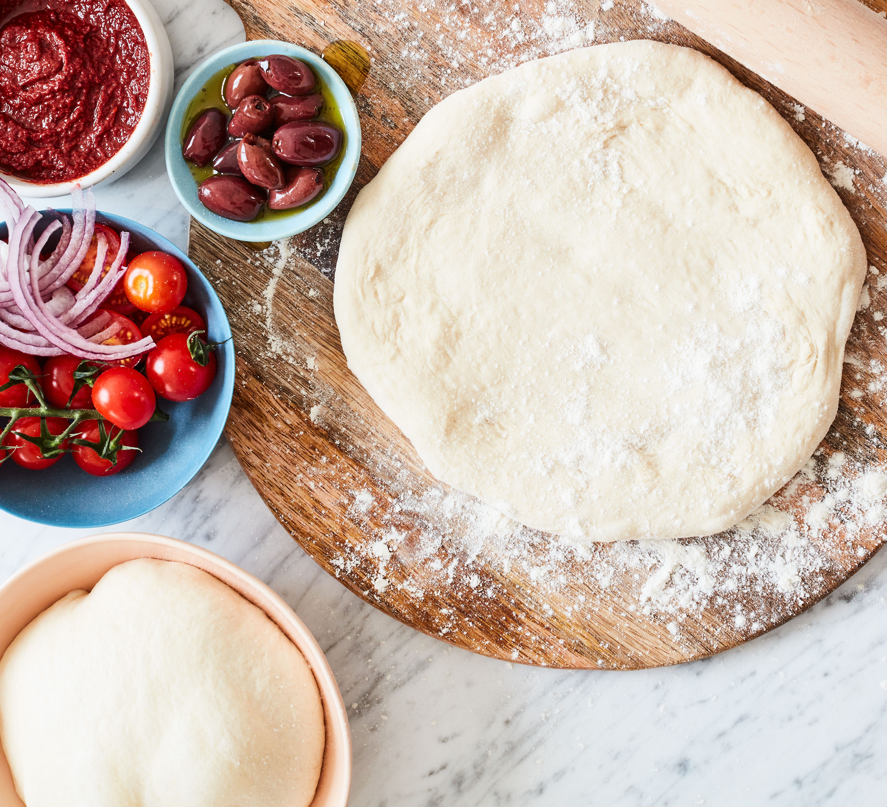

Pizza Dough

Prepare this easy homemade lasagne ahead of time and save in the freezer, uncooked, for when you need it during a busy week.
Then just bake for an extra 45 mins.
Ingredients
- 500g of '00' flour
- 1 tsp salt
- 1/2 tsp dried yeast
- 350ml warm water
- oil, for greasing
Cooking Steps
- It’s easiest to make this in a standing mixer with a dough hook (otherwise mix it in a bowl and knead on your work surface). Put the flour and salt in the bowl and mix the yeast into the water. It’s always a good idea to wait 5 mins before using the liquid to see if the yeast is working – little bits will start to rise to the top and you’ll know it’s active.
- Turn on the motor and pour in the liquid. Keep the speed on medium-high and it should come together as a ball. If the bottom is still sticking, tip in 1-2 tbsp of flour. Knead for 5-7 mins until the dough is shiny and it springs back when you press your finger into it. (If kneading by hand, it will take you about 10 mins.) Try not to add too much flour if you can. This is a slightly sticky dough, but that keeps it light and it rises beautifully.
- Use oiled hands to remove the dough from the hook and bowl. Oil another bowl and place the dough in it. Turn it around so that it’s lightly coated in the oil. Cover tightly with cling film and then a tea towel. Place in a draught-free area that’s warm and leave until the dough has doubled in size. If it’s a hot day, it should only take 2 to 3 hrs to rise, but it could take 4 hrs if it’s cold. (If you don’t plan to use the dough for a day or two, place it in the fridge straight away; take it out 3-4 hrs before using. Punch it down first and bring it together on a floured surface.)
- Divide the dough into 2 pieces for big pizzas or 4 for plate-sized ones, then shape into balls (see Shaping the dough in tips, below) – dust them in flour as they will be sticky. Keep them covered with a tea towel or cling film while you prepare the toppings. (you can also freeze them in sealed bags. Just thaw in the fridge on the day, then bring to room temperature 3 hrs before using.)
- To shape the dough: If you want to get air pockets and a light but crisp dough, then don’t use a rolling pin. It flattens and pops the air bubbles. (Two days in the fridge will produce the most air bubbles – take it out three to four hours before using.) If your dough is at room temperature, you can use your fingers to gently stretch the dough out. Once it’s about 16cm, place the disc over the tops of your hands (not palm side) and use them to stretch it further, up to about 25cm. You can start pressing out the other discs, then wait to do the final bit when you’re ready to cook. Once you’ve mastered stretching the dough out, you can experiment with other shapes: rectangles, rounds or squares all look authentic.
- To cook the pizza: An outdoor gas barbecue is best for controlling the temperature, but charcoal will give your pizza a more authentic, smoky flavour. For gas, turn the flames down to medium-low so that the bottom of the pizza doesn't burn. When cooking on a charcoal barbecue, let the coals turn grey before you pop on the pizza.
- Place the pizza on a floured baking sheet (with no edge) or a pizza peel – this is a flat pizza paddle with a long handle, which makes it easier to get the dough on and off the grill. The flour will provide the 'wheels' for it to slide onto the grill – don’t use oil as it sticks more and won’t transfer as well.
- Make sure the grill is hot and the flames have died back if cooking on charcoal. Slide the dough onto the grill, close the lid (if your barbecue has one) and give it three to four minutes. The dough will puff up; it's ready when the bottom has light brown stripes. Use tongs to pull the dough off and turn it upside down.
- Assemble the pizza of your choice – see 'Goes well with', right, for topping suggestions. Remember that less is more, as the dough will stay crisper and the toppings will cook better.
- Place the pizza back on the grill, uncooked-side down, and shut the lid. Give it another three to four minutes, then remove when the cheese is melted and the toppings are hot.